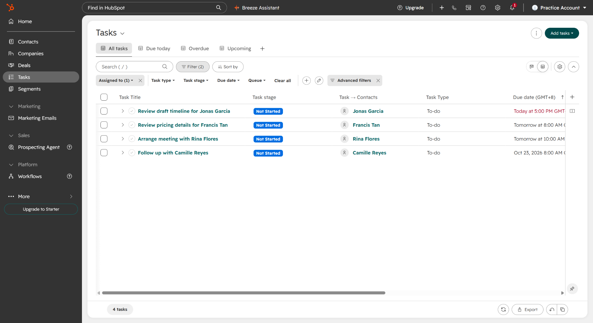
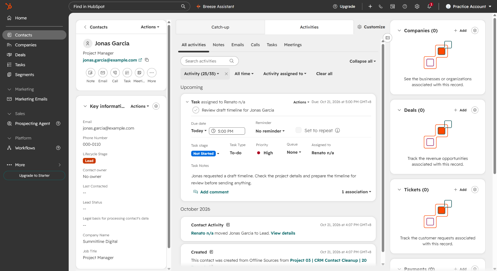
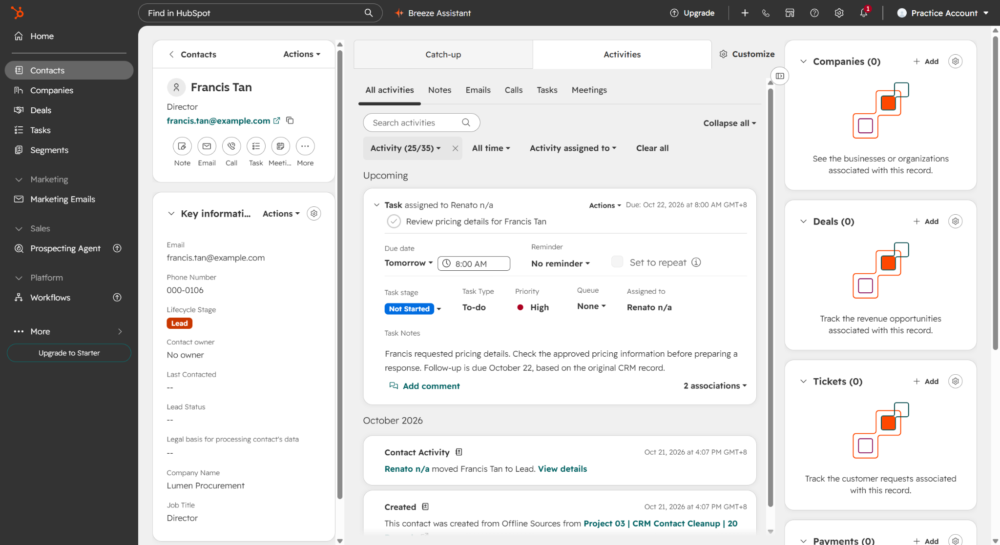
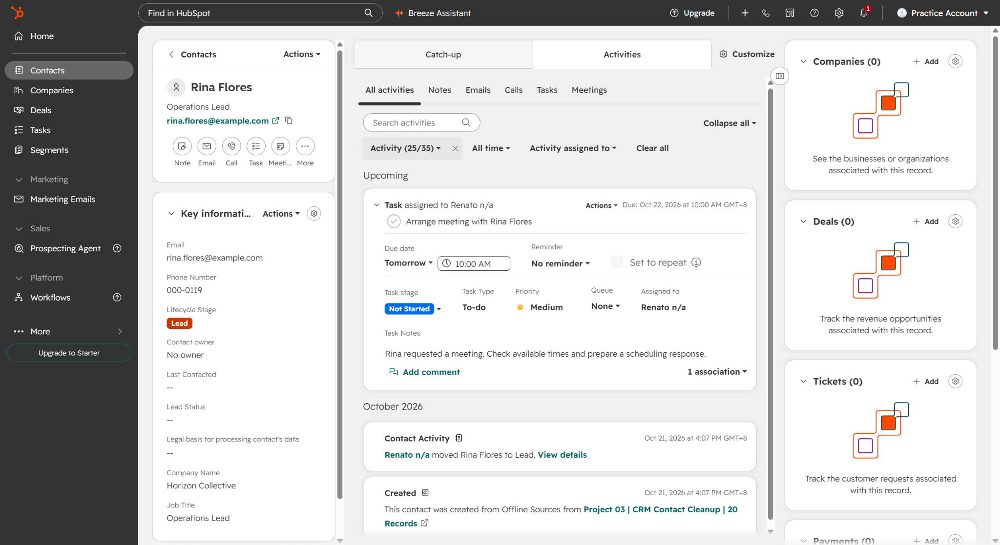
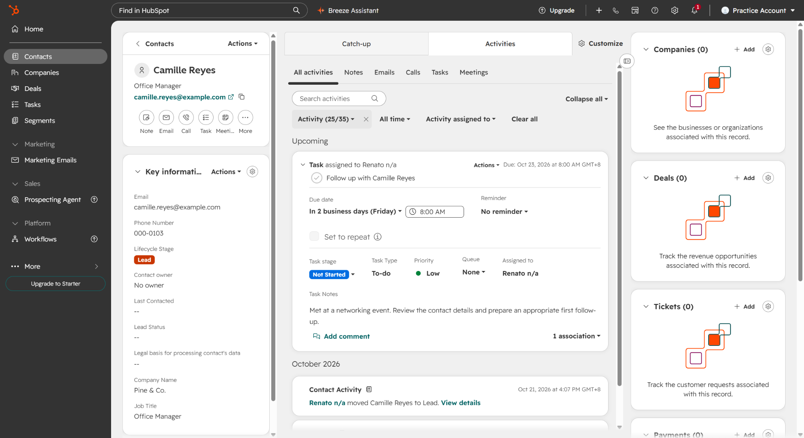

Project 03 / CRM Data Cleanup & Lead Tracking
HubSpot Follow-up Tasks
I created four contact-linked tasks in HubSpot. The overview shows all four together, and the individual captures show their due dates, priorities, and task notes.
Task status: All four are Not Started at capture. These screenshots show task setup and follow-up planning.
The task list

Review draft timeline for Jonas Garcia

Task notes: Jonas requested a draft timeline. Check the project details and prepare the timeline for review before sending anything.
Review pricing details for Francis Tan

Task notes: Francis requested pricing details. Check the approved pricing information before preparing a response. Follow-up is due October 22, based on the original CRM record.
Arrange meeting with Rina Flores

Task notes: Rina requested a meeting. Check available times and prepare a scheduling response.
Follow up with Camille Reyes

Task notes: Met at a networking event. Review the contact details and prepare an appropriate first follow-up.